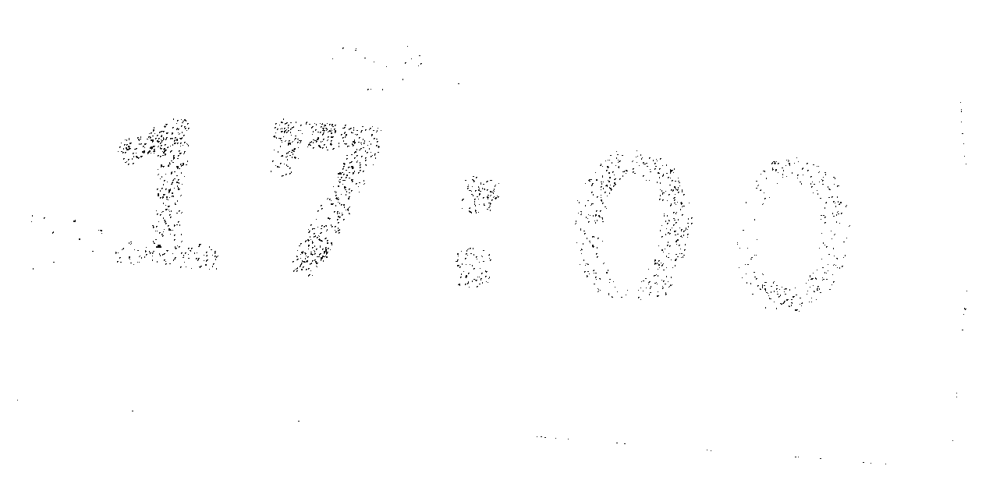

fri 23three at 15:30, then warsh at 19:30, then nothing until monday.
15:30
III
non-farm employment change
– –
140K
152K
above forecast -> usd up -> gold down
15:30
III
unemployment rate
– –
4.3%
4.3%
above forecast -> weak jobs -> gold up
15:30
III
average hourly earnings m/m
– –
0.3%
0.4%
above forecast -> inflation risk -> gold down
19:30
III
fed chair warsh speaks
– –
hawkish -> gold down. dovish -> gold up.
III high. II medium. ▲ ▼ actual above or below forecast. – – not printed yet.
the book: what the textbook says gold should do. it is right more often than not.
sample week. the clock in the 17:00 row starts at wednesday 16:23 when you open this page.
what the book said. what gold did.
a passenger on route 3, pravda street
he read the book too.
mon 19, 17:00. ism manufacturing. 50.1 against 49.5.
bookdowngolddown−9.40
tue 20, 17:00. jolts job openings. 7.44M against 7.20M.
the book saiddowngold didup+11.20the book lied.
wed 21, 15:15. adp non-farm employment change. 98K against 120K.
the book saidupgold didup+6.10
it was right twice. you will remember the other time.
ism services pmi. wed 21, 17:00 utc+3.
forecast 52.0. previous 51.4.
above 52.0: the dollar firms and gold goes down. that is the book.
below 52.0: gold goes up. also the book.
51.9 to 52.1: the book has nothing to say. wait for the first fifteen-minute candle to close.
adp came in weak today, 98K against 120K, and gold took +6.10 for it. some of that weakness is already in the price.
the book has been right twice this week. on tuesday it was not.
not advice. a sheet of paper.

gold pans on a sill, tankavaara, 1977. waiting is most of the job.